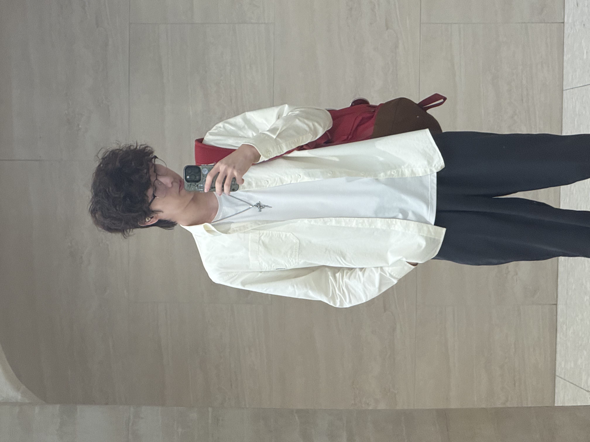
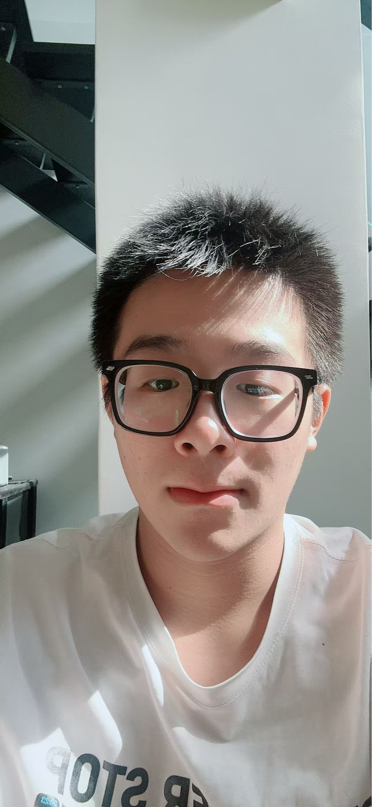
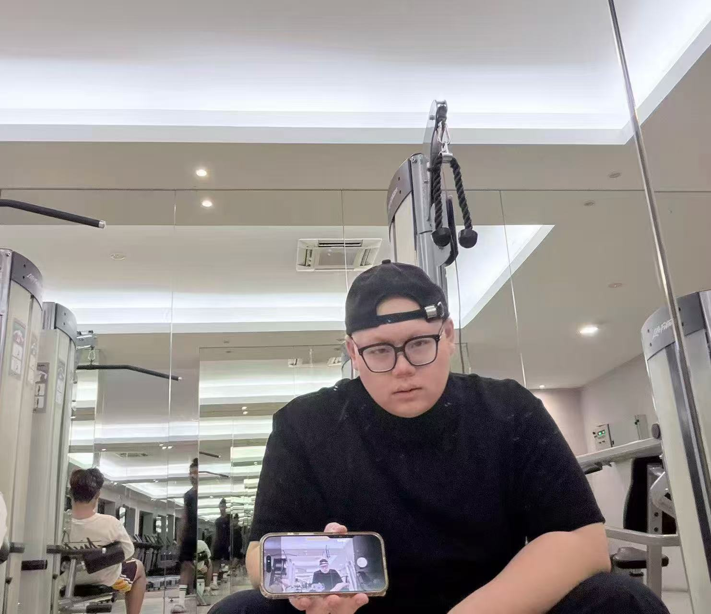
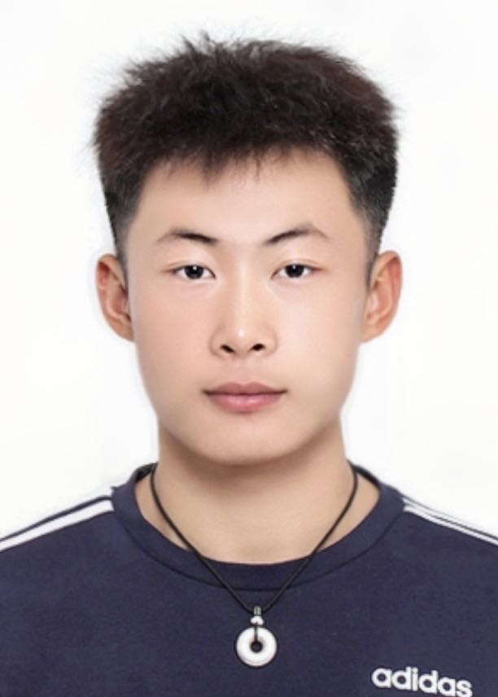

Theme: Time Travel
Swipe DownWe are a creative and collaborative team that worked closely together to bring our stop motion idea to life that combining our strengths to produce a meaningful and engaging project.

0388636

0368752

0385010

0385351
This project explores the idea of being out of sync with time. A character lives in a world where everything moves normally, but they experience time at a different speed.
At first, this difference causes confusion and isolation. However, by the end, the character learns to adapt and find balance.
The animation begins with a character sitting at a desk. Objects around them like a clock, paper, and cup—start moving very fast. The character reacts slowly, unable to keep up.
Scenes show people passing quickly, lights flickering, and time rushing. Then suddenly, everything freezes. Now the character is the only one moving.
They explore the frozen world, gaining control and confidence. In the final scene, time returns to normal speed, and the character calmly continues their activity now in sync with their own rhythm.